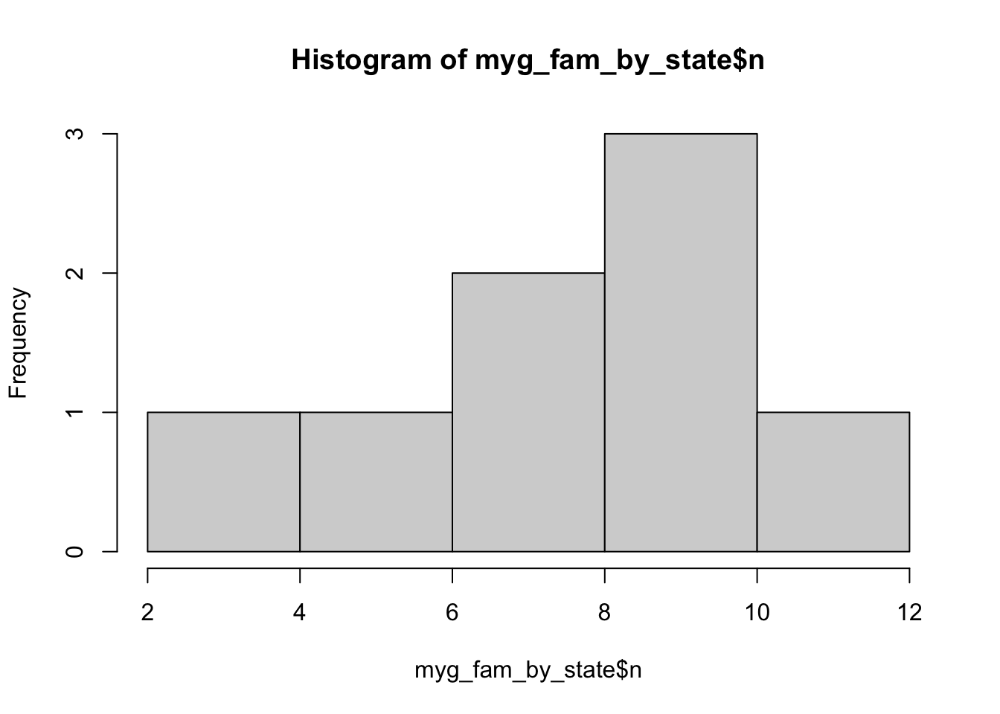

2 Methods
2.1 Data retrieval
Note
We downloaded data for this report on the 2024-03-13 and the raw download contained 9395 records
Source code
The data retrieval workflow can be found here
We used data from Atlas of Living Australia (ALA) for this study. We downloaded occurrence records using the galah R package using the following criterion:
- Found in Australian mainland and Tasmania.
- Identified to a taxon rank of species.
- Basis of record of either:
- Preserved specimen
- Material sample
- Machine observation
- Human observation
- Coordinate uncertainty of less than 1000 meters or has a value of NA (citizen science records or human observations are typically entered as NA)
We also used ALA’s data quality assertions to further refine our download. We excluded occurrence records using the following criterion:
- Coordinates are equal to 0
- Coordinates are presumed swapped e.g. when latitude is entered as longitude
- Latitude and longitude values are presumed negated
- Coordinates our out of range
- Taxon excluded by the ALA
- Taxon considered as a questionable species
See Section 2.2.5 to learn more about which assertions we used for this project.
2.2 Data overview
Note
The full data overview report can be found here
Source code
The data overview workflow can be found here
After the initial data retrieval the data were summarised to provide an overview of the number of records, species, and families represented, as well as the broad distribution of these across Australian states. The basis of records and data quality assertions were also investigated. This provided a broad overview of data quality and facilitated review by taxonomic experts.
2.2.1 Species
There are 457 species in total in the original download.
The below barplot shows the distribution of the number of records across species.
The below table shows the number of records of each species.
2.2.2 Family
Barplot showing the number of species in each family:

2.2.3 Taxonomic overview by state
Top 3 most recorded species in each state:
# A tibble: 24 × 3
# Groups: stateProvince [8]
stateProvince species n
<chr> <chr> <int>
1 Australian Capital Territory Missulena occatoria 69
2 Australian Capital Territory Atrax yorkmainorum 22
3 Australian Capital Territory Paraembolides brindabella 11
4 New South Wales Atrax robustus 258
5 New South Wales Missulena bradleyi 164
6 New South Wales Missulena occatoria 97
7 Northern Territory Missulena pruinosa 33
8 Northern Territory Selenocosmia stirlingi 31
9 Northern Territory Aname humptydoo 11
10 Queensland Missulena occatoria 330
11 Queensland Missulena bradleyi 292
12 Queensland Seqocrypta jakara 266
13 South Australia Blakistonia aurea 199
14 South Australia Missulena occatoria 156
15 South Australia Idiosoma subtriste 151
16 Tasmania Hadronyche venenata 72
17 Tasmania Teranodes montana 63
18 Tasmania Chenistonia trevallynia 47
19 Victoria Missulena occatoria 155
20 Victoria Hadronyche modesta 137
21 Victoria Hadronyche meridiana 85
22 Western Australia Aname mellosa 473
23 Western Australia Bungulla bertmaini 121
24 Western Australia Aname lorica 117Barplot showing the number of species and families by state:

Map showing the number of species by state:

Map showing the number of families by state:

2.2.4 Basis of record
Total counts of basis of record types.
basisOfRecord n percent
PRESERVED_SPECIMEN 7828 83.32
HUMAN_OBSERVATION 1514 16.11
MATERIAL_SAMPLE 52 0.55
MACHINE_OBSERVATION 1 0.01PRESERVED_SPECIMEN: An occurrence record describing a preserved specimen.
HUMAN_OBSERVATION: An occurrence record describing an observation made by one or more people.
MATERIAL_SAMPLE: An occurrence record based on samples taken from other specimens or the environment.
MACHINE_OBSERVATION: An occurrence record describing an observation made by a machine.
2.2.5 Assertions
Various tests are run on occurrence data in the Atlas of Living Australia, resulting in assertions about the content and quality of the data. These assertions help users gauge whether data is fit for their purposes and allow for easy data filtering. Assertions are logical variables (TRUE/FALSE) and take the value TRUE when they apply to the associated occurrence record. Descriptions of Assertions can be found at here
Here, we have focused on spatial and taxonomic assertions because accurate identification of taxa and their spatial distributions is imperative to the calculation of endemism metrics and subsequent mapping.
2.2.5.1 Spatial assertions
We investigated a range of spatial assertions and deemed the following safe to bypass when refining the data download:
COORDINATE_UNCERTAINTY_METERS_INVALID
We performed visual checks and flagged records did not seem to be out of species’ range. They were mostly cases wherecoordinateUncertaintyinMeterswas NA. We know iNaturalist records input NA forcoordinateUncertaintyinMeters, therefore in refining the data download we will include records wherecoordinateUncertaintyinMetersis NA or less than 1000 m. We will remove flagged values for a sensitivity analysis later on.COORDINATE_ROUNDED
The original coordinates were rounded to six decimals (~ 1 m precision) to simplify processing. The level of precision lost will not affect the endemism analysis.
The following will be used to refine the data download as they indicate coordinates outside of the given country (records flagged as TRUE will be excluded):
COORDINATE_OUT_OF_RANGEPRESUMED_NEGATED_LONGITUDEPRESUMED_NEGATED_LATITUDEPRESUMED_SWAPPED_COORDINATEZERO_COORDINATE
2.2.5.2 Taxonomic assertions
The following assertions were used to identify taxonomic discrepancies in the data and allow for review by taxonomic experts:
TAXON_MATCH_FUZZY - is flagged when the supplied scientific name (raw_scientificName) does not exactly match the taxonomic backbone of the Atlas.
2.3 Data cleaning
Note
The full data cleaning report can be found here
Source code
The data overview workflow can be found here
The following criterion were used to identify and remove records for the endemism analyses:
- Taxonomic errors, invalid species names or synonyms
- Species introduced to Australia
- Marine taxa
- Records with geographic errors
- Any subspecies level identifications were reclassified to species level
- Duplicates
2.3.0.1 Taxonomic Errors
2.3.0.2 Invalid names
The (AFD) is an online catalogue of taxonomic and biological information on all animal species known to occur within Australia and its territories.
The Australian Faunal Directory (AFD) was used to cross validate the records from ALA to ensure all records had valid species names.
A list of valid species names was downloaded from the AFD and was compared to the species names in our dataset, subsetting any records that did not have a matching valid name.
We identified 4 records in the ALA that did not match with names in the AFD. These were:
AFD_unmatched[1] "Kwonkan turriger" "Proshermacha wilga" "Eucyrtops eremaeus"
[4] "Selenocosmia crassipes"For all records that did not match the AFD, we check if they are synonyms of a valid species but this does not seem to be the case.
Important
As such, we decide to exclude these 4 taxa** from our dataset **(15 observations, 0.002% of raw dataset).
2.3.0.3 Introduced Species
Any species which are not native to Australia needed to be removed from our dataset. To identify all introduced species in the dataset, we used species lists from the World Spider Catalogue (WSC) and the Global Register of Invasive and Introduced Species (GRIIS).
The (WSC) is a comprehensive online database of spiders from around the world, with detailed taxonomic information, distribution maps, references and images.
Important
Introduced species in the WSC matched with 0 records in our data.
(GRIIS) is a project by the IUCN SSC Invasive Species Specialist Group to compile annotated and verified country-wise inventories of introduced and invasive species.
Important
There are no arachnids in the Australian GRIIS list
For the purpose of this project, we conclude there are no introduced spiders in our dataset.
2.3.0.4 Marine Species
The World Register of Marine Species (WoRMS) was used to identify and remove marine species from the data.
WoRMS provides a authoritative and comprehensive list of names of marine organisms, including currently valid and alternative names.
We then read the output to find matches between ALA data and WoRMS output.
wormsOutput <- readRDS(here("output/worrms_myg_wm_records_taxamatch.rds"))
wormsOutput$match_type[1] "phonetic" "phonetic" "phonetic" "phonetic" "phonetic" "near_3" "near_3" #find exact matches between our ALA data and worms output
length(which(wormsOutput$match_type %in% "exact"))[1] 0wormsOutput$match_type %in% "near"[1] FALSE FALSE FALSE FALSE FALSE FALSE FALSEwormsOutput$scientificname[1] "Nahia" "Niahia" "Nia"
[4] "Naia" "Castalia (Naia)" "Cantharus assimilis"
[7] "Synstyela michaelseni"wormsOutput$search_term[1] NA NA NA
[4] NA NA "Cantuaria assimilis"
[7] "Synothele michaelseni"wormsOutput |> select(scientificname, search_term, match_type)# A tibble: 7 × 3
scientificname search_term match_type
<chr> <chr> <chr>
1 Nahia <NA> phonetic
2 Niahia <NA> phonetic
3 Nia <NA> phonetic
4 Naia <NA> phonetic
5 Castalia (Naia) <NA> phonetic
6 Cantharus assimilis Cantuaria assimilis near_3
7 Synstyela michaelseni Synothele michaelseni near_3 names(wormsOutput) [1] "AphiaID" "url" "scientificname"
[4] "authority" "status" "unacceptreason"
[7] "taxonRankID" "rank" "valid_AphiaID"
[10] "valid_name" "valid_authority" "parentNameUsageID"
[13] "kingdom" "phylum" "class"
[16] "order" "family" "genus"
[19] "citation" "lsid" "isMarine"
[22] "isBrackish" "isFreshwater" "isTerrestrial"
[25] "isExtinct" "match_type" "modified"
[28] "search_term" 2.3.0.5 Geographic Errors
2.3.0.6 Subspecies
We checked for subspecies by counting the number of words in the “species” field. Any records with more than 2 words in the “species” field were flagged as potential subspecies level identifications.
count_words <- function(string) {
words <- strsplit(string, "\\s+")[[1]] # Split the string into words
return(length(words)) # Return the number of words
}
word_counts <- lapply(myg_spiders$species |> unique(), count_words)There were 0 records with more than two words in the “Species” field, and therefore, no subspecies identifications were found within our data.
2.3.0.7 Duplicate Records
nrow(myg_spiders)[1] 9395head(myg_spiders)# A tibble: 6 × 29
scientificName decimalLatitude decimalLongitude eventDate
<chr> <dbl> <dbl> <dttm>
1 Arbanitis baehrae -32.1 152. 1993-02-04 00:00:00
2 Trittame loki -16 145. 1992-07-21 00:00:00
3 Arbanitis robertsi -27.3 153. 1973-07-29 00:00:00
4 Atrax yorkmainorum -35.3 149. 1983-07-09 00:00:00
5 Cethegus lugubris -10.8 142. 1975-01-30 00:00:00
6 Idiosoma smeatoni -35.0 139. NA
# ℹ 25 more variables: occurrenceStatus <chr>, dataResourceName <chr>,
# phylum <chr>, class <chr>, order <chr>, family <chr>, genus <chr>,
# species <chr>, taxonRank <chr>, taxonID <chr>, raw_scientificName <chr>,
# raw_vernacularName <chr>, raw_geodeticDatum <chr>, stateProvince <chr>,
# country <chr>, locality <chr>, coordinatePrecision <dbl>,
# coordinateUncertaintyInMeters <dbl>, raw_decimalLatitude <dbl>,
# raw_decimalLongitude <dbl>, verbatimCoordinates <chr>, …Mygalomorphae_clean <- myg_spiders |>
filter(!is.na(decimalLatitude) & !is.na(decimalLongitude)) |>
filter(!duplicated(decimalLatitude) & !duplicated(decimalLongitude))
nrow(Mygalomorphae_clean)[1] 3630head(Mygalomorphae_clean)# A tibble: 6 × 29
scientificName decimalLatitude decimalLongitude eventDate
<chr> <dbl> <dbl> <dttm>
1 Arbanitis baehrae -32.1 152. 1993-02-04 00:00:00
2 Trittame loki -16 145. 1992-07-21 00:00:00
3 Arbanitis robertsi -27.3 153. 1973-07-29 00:00:00
4 Atrax yorkmainorum -35.3 149. 1983-07-09 00:00:00
5 Cethegus lugubris -10.8 142. 1975-01-30 00:00:00
6 Idiosoma smeatoni -35.0 139. NA
# ℹ 25 more variables: occurrenceStatus <chr>, dataResourceName <chr>,
# phylum <chr>, class <chr>, order <chr>, family <chr>, genus <chr>,
# species <chr>, taxonRank <chr>, taxonID <chr>, raw_scientificName <chr>,
# raw_vernacularName <chr>, raw_geodeticDatum <chr>, stateProvince <chr>,
# country <chr>, locality <chr>, coordinatePrecision <dbl>,
# coordinateUncertaintyInMeters <dbl>, raw_decimalLatitude <dbl>,
# raw_decimalLongitude <dbl>, verbatimCoordinates <chr>, …2.4 Generation of \(\alpha\) hulls
Spatial data for invertebrates are typically sparse, often resulting in exclusion of entire species when using advanced spatial modelling methods such as species distribution models.
One way to retain as many species as possible in a spatial analysis is to represent species range with alpha-hulls, a form of spatial polygon. An alpha-hull can be computed using a minimum of three data points, which allows the inclusion of data-deficient invertebrates in our endemism analysis
Using the cleaned data, we applied the EOO.computing() function from R package ConR to quantify alpha-hulls for all species that had at least 3 records (n = ). We used an alpha value of 2 and a buffer size of 0.000001 (which approximates to ~100m). The alpha-hull workflow is laid out in this document.
Alpha-hulls were converted into SpatialPolgyon objects using the sp R package and exported for endemism analysis
2.5 Biodiversity metrics
In order to quantify patterns of species richness and endemism, we need to convert our point based (i.e. coordinates for each occurrence of a species) into a community matrix, whereby each row in the matrix corresponds to a different site, while each column represents a different species. The entries in the matrix indicate whether a species is present at a particular site (often with a 1 for presence and 0 for absence) or how abundant the species is at that site. See here for further information.
We converted our alpha-hulls into a community matrix using the poly2comm() function in the phyloregion R package. The resolution or grid size is set at 0.5 decimal degrees. The poly2comm() also computes abundance (the number of individuals in each cell) and species rich (number of species in each cell).


2.5.1 Quantifying endemism
Endemism is a measure of rarity relative to other species (refs). There are multiple metrics to assess which areas are of importance for Mygal spiders, each have their own caveats. In order to get a fuller picture of the distribution of species and importantly, rare species that are limited in their range, we need to use a combination of endemism metrics.
2.5.1.1 Weighted endemism
Weighted endemism is species richness inversely weighted by species ranges(Crisp et al. 2001),(Laffan and Crisp 2003),(Barnabas H. Daru et al. 2020). It gives higher weight to species with smaller ranges, emphasizing areas with many range-restricted species. WE highlights areas with a high concentration of rare species, which can be crucial for conservation efforts, however regions with high species richness can have inflated WE values simply because they have more species, not necessarily more endemics (https://www.jstor.org/stable/3554498).
We calculated WE using the weighted_endemism() from phyloregion package.
2.5.1.2 Corrected weighted endemism
Corrected weighted endemism accounts for species richness in each cell. This correction accounts for the fact that areas with more species are likely to have more endemics by chance alone (Crisp and Laffan). It provides a balanced measure, considering rarity and richness and range sizes.
We calculated CWE by dividing the WE in each grid cell by species richness.
2.5.2 Statistical inference
We calculated the Moran’s I test statistic, to determine whether spatial patterns of species richness, abundance and endemism for Mygals are distributed in a way that is not expected by random chance. It is a statistical measure used to assess spatial autocorrelation, which is the degree to which a set of spatial features e.g occurrences or polygons are clustered, dispersed, or randomly distributed across a geographic area (ref).
Allows for detection of whether areas with high endemism (regions with many unique species) are spatially clustered. This helps in identifying biodiversity hotspots that require conservation efforts
Moran’s I quantifies how similar or dissimilar values are at nearby locations. It ranges from -1 to 1: 1: Perfect positive spatial autocorrelation (values are highly clustered). 0: No spatial autocorrelation (random distribution). -1: Perfect negative spatial autocorrelation (values are perfectly dispersed)12.
2.6 Data and code availability
All data and code to reproduce the R portion of our analyses can be found at our Github repository.